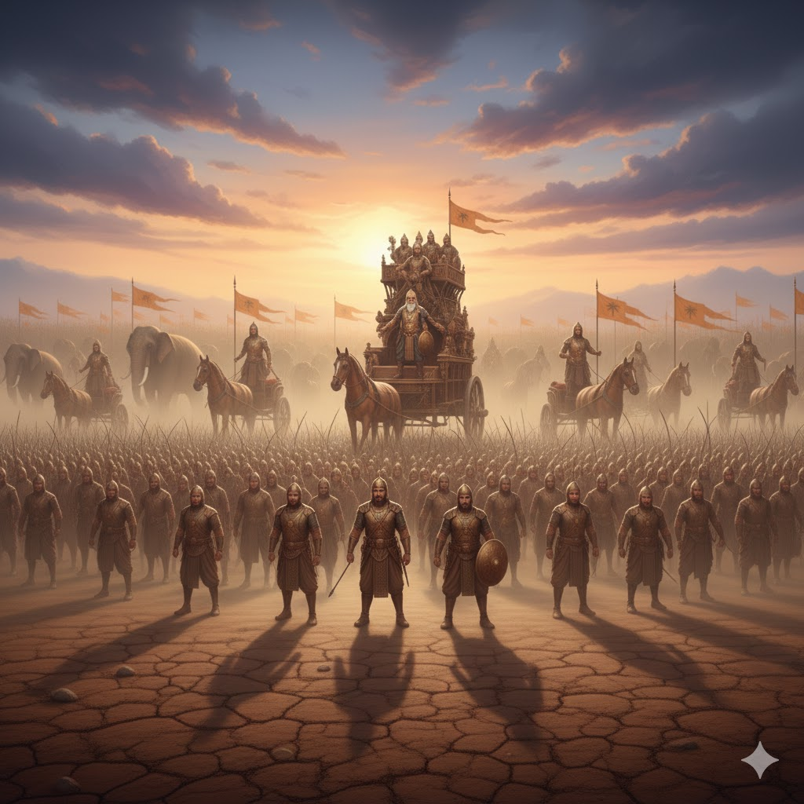

সরল ভাবার্থ
অতএব আপনারা সকলে যুদ্ধের বিভিন্ন প্রবেশপথে নিজেদের অবস্থানে সুপ্রতিষ্ঠিত থেকে বিশেষভাবে পিতামহ ভীষ্মকেই রক্ষা করুন।
বিস্তারিত ধর্মীয় ব্যাখ্যা
দুর্যোধন এখন তাঁর সব সৈন্যদের এক বিশেষ নির্দেশ দিচ্ছেন। তিনি জানতেন যে পিতামহ ভীষ্ম হলেন কৌরবদের সবচাইতে বড় স্তম্ভ। যদি ভীষ্মের পতন হয়, তবে পুরো কৌরব বাহিনী তাসের ঘরের মতো ভেঙে পড়বে। তাই তিনি সবাইকে আদেশ দিচ্ছেন যে তারা যেন যে যার জায়গায় দাঁড়িয়ে কেবল ভীষ্মকে রক্ষা করার দিকে নজর দেয়। এটি এক অদ্ভুত মনস্তত্ত্ব—সাধারণত সৈন্যরা সেনাপতিকে রক্ষা করে, কিন্তু দুর্যোধন এখানে যেন একটু বেশিই শংকিত। তিনি ভাবছেন শিখণ্ডী বা অর্জুনের তীরে যদি ভীষ্ম আহত হন, তবে সব শেষ হয়ে যাবে।
ধর্মীয় দৃষ্টিকোণ থেকে এই শ্লোকটি 'নির্ভরশীলতার' সংকট বোঝায়। দুর্যোধন ধর্মের ওপর নির্ভর না করে এক ব্যক্তির ওপর নির্ভর করছিলেন। তিনি ভুলে গিয়েছিলেন যে ঈশ্বর যখন কারো বিনাশ চান, তখন পৃথিবীর কোনো রক্ষকই তাকে বাঁচাতে পারে না। ভীষ্ম যদিও অজেয় ছিলেন, কিন্তু তিনি লড়ছিলেন অধর্মের পক্ষে। দুর্যোধনের এই আদেশটি তাঁর গভীর অভ্যন্তরীণ অবিশ্বাসের বহিঃপ্রকাশ। তিনি গুরুর কাছে গিয়ে যখন অনেক দম্ভ দেখালেন, পরক্ষণেই তিনি ভীষ্মের সুরক্ষার জন্য দুশ্চিন্তা প্রকাশ করতে শুরু করলেন। জীবনের যুদ্ধে আমরা যখন কেবল বাহ্যিক উপকরণের ওপর ভরসা করি, তখন আমাদের অবস্থাও দুর্যোধনের মতো হয়। আমরা প্রতি মুহূর্তে ভয় পাই যে আমাদের শেষ আশ্রয়টুকু না হারিয়ে ফেলি। প্রকৃত শান্তি তখনই আসে যখন আমরা নিজের ওপর বা কোনো নশ্বর ব্যক্তির ওপর নয়, বরং অবিনাশী ঈশ্বরের ওপর নির্ভর করি। দুর্যোধনের এই অতি-সতর্কতা আসলে যুদ্ধের চরম পরিণতিরই একটি সংকেত।

[ছবি: ভীষ্মের বিশাল রথের চারপাশে কৌরবদের শত শত রথী ও ধনুর্ধর বেষ্টনী তৈরি করে পাহারা দিচ্ছে।]